4 Time-domain Response
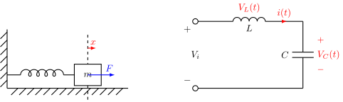
Modeling:
- Differential equation
- Transfer function (L.T. of D.E.)
\(\left.\begin{array}{c}\ \\[2ex] \ \end{array}\right\}\) Classical S.I.S.O
- State-space model (Matrix of D.E.)
Modern M.I.M.O
Input \(x(t)\):
- periodic
- non-periodic
\[\begin{align*} \color{YellowOrange}\text{F.S.:} \\ \color{blue}\underset{\Big\downarrow}{\color{YellowOrange} x(t)} \,&\color{YellowOrange}= \color{green}\overset{\text{step input}}{\color{blue}\underset{\Big\downarrow}{\color{green}\boxed{\color{YellowOrange}\text{DC}}}} \color{YellowOrange} + \color{green}\overset{\text{AC input}}{\underset{\omega_0,2\omega_0,3\omega_0}{\boxed{\color{YellowOrange}\text{Sine}}}} \\ \color{blue} y(t) \,&\color{blue}= \, \color{red}\underset{\text{response}}{\underset{\text{step}}{\underset{\downarrow}{\underline{\color{blue}y_{\mathrm{DC}}(t)}}}} \color{blue} \, + \, \color{red}\underset{\text{response}}{\underset{\text{frequency}}{\underset{\downarrow}{\underline{\color{blue}y_{\mathrm{AC}}(t)}}}} \color{blue} \end{align*}\]
\[\begin{align*} \color{YellowOrange}\text{F.T.:} \\ \color{YellowOrange}x(t) \,&\color{YellowOrange}= \text{DC} + \color{green}\overset{\text{AC input}}{\underset{\omega_0 \to 0}{\boxed{\color{YellowOrange}\text{Sine}}}} \end{align*}\]
Time-domain Response (cont’d)
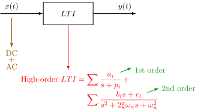
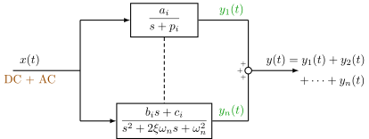
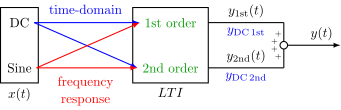
4.1 Unit step response of 1st order system
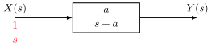
\[\begin{align*} Y(s) &= \frac{1}{s} \cdot \frac{a}{s+a} \\ &= \frac{1}{s} - \frac{1}{s+a} \end{align*}\]
Inverse L.T.: \[ \color{blue} y(t) = 1 - e^{-at} \]
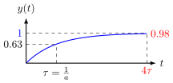
\(\boxed{\textbf{Performance Index}}\)
-
Time constant \(\tau = \displaystyle\frac{1}{a}\)
\(y(t=\tau) = 1 - e^{-1} \approx 0.63(2121)\)
-
Settling time:
\(T_{ss} = 4 \tau = \displaystyle\frac{4}{a}\quad\) (2%)
\(y(t=4\tau) = 1 - e^{-4} \approx 0.98(1684)\)
\(\color{green} T_{ss} = 3 \tau\) (5%)
\(\color{green}y(t=3\tau) = 1 - e^{-3} \approx 0.95(0213)\)
\(\color{RedOrange}\underline{\text{Unit impulse response}}\)
\(\color{RedOrange}\mathcal{L}\{\delta(t)\} = 1\)
\(\color{RedOrange}Y(s) = \displaystyle\frac{a}{s+a}\)
\(\color{RedOrange}y(t) = a \cdot e^{-at}\)
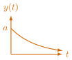
4.2 Unit impulse response of 2nd order system
\[\color{red}\boxed{\color{black}\frac{\omega_n^2}{s^2+2 \xi \omega_n s + \omega_n^2}} \quad \color{red}\text{typical}\]
\[ \frac{\omega_n^2}{s^2 + 2 \xi \omega_n s} = \frac{\omega_n^2}{s(s + 2 \xi \omega_n)} = \color{red}\underset{\text{1st}}{\underline{\color{black}\frac{a_1}{s}}} \color{black} - \color{red}\underset{\text{1st}}{\underline{\color{black}\frac{a_2}{s+2\xi\omega_n}}}\]
\[ \frac{\omega_n^2}{s^2 + \omega_n^2} = \frac{\omega_n^2}{(s + j\omega_n)(s - j\omega_n)} \]
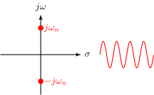
For typical 2nd order systems: \[\color{red}\text{C.E.} \quad \color{blue}\underset{a}{\underline{1}}\color{red}s^2 + \color{blue}\underset{b}{\underline{\color{red}2 \xi \omega_n}} \color{red} s + \color{blue}\underset{c}{\underline{\color{red}\omega_n^2}} \color{red} = 0\]
\[\begin{align*} s &= \frac{-b \pm \sqrt{b^2 - 4ac}}{2a} \\ &= \frac{-2 \xi \omega_n \pm \sqrt{(2 \xi \omega_n)^2 - 4 \omega_n^2}}{2} \\ &= \frac{-2 \xi \omega_n \pm 2 \omega_n \sqrt{\xi^2 - 1}}{2} \\ &= -\xi \omega_n \pm \omega_n \sqrt{\xi^2 - 1} \end{align*}\]
When \(\xi > 1\), overdamped. \[\color{YellowOrange}\text{S.O.S.} = \frac{a_1}{s+p_1} + \frac{a_2}{s+p_2} \color{blue} = \boxed{a_1 \cdot e^{p_1 t} + a_2 \cdot e^{p_2 t}}\]
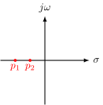
When \(\xi = 1\), critically damped. \[\color{YellowOrange}\text{S.O.S.} = \frac{\omega_n^2}{(s+\omega_n)^2} = \color{blue} \boxed{(a_1 + a_2 t) \cdot e^{-\omega_n t}}\]
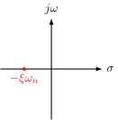
\(\color{red}\boxed{\color{black}\text{When }\xi < 1\text{, underdamped.}}\) \[\begin{align*} \color{YellowOrange}s &\color{YellowOrange}= -\color{red}\underset{\sigma}{\underbrace{\color{YellowOrange}\xi \omega_n}} \pm j \cdot \color{red}\underset{\omega}{\underbrace{\color{YellowOrange}\sqrt{1 - \xi^2} \cdot \omega_n}} \\[1ex] \color{red} s &\color{red}= -\sigma \pm j \omega \end{align*}\]
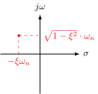
\[\begin{align*} \frac{\omega_n^2}{s^2 + 2 \xi \omega_n s + \omega_n^2} &= \frac{\omega_n^2}{(s + \xi \omega_n)^2 + (1-\xi^2) \omega_n^2} \\ &= \frac{\omega_n^2}{(s + \sigma)^2 + \omega^2} \\ &= \frac{c_1}{(s + \sigma) + j \omega} + \frac{c_2}{(s + \sigma) - j \omega} \end{align*}\]
To find \(c_1\) and \(c_2\): \[\begin{align*} c_1 \cdot (s+\sigma - j \omega) + c_2 \cdot (s+\sigma + j \omega) &= \omega_n^2 \\ \color{red}\underset{0}{\underbrace{\color{green}(c_1 + c_2)}} \cdot (s+\sigma) + j \omega (c_2 - c_1) &= \omega_n^2 \end{align*}\]
\[ \color{Orchid}c_1 = -c_2 \] \[ \color{Orchid}2c_2 \cdot j \omega = \omega_n^2 \implies c_2 = \frac{\omega_n^2}{2 j \omega},\quad c_1 = -\frac{\omega_n^2}{2 j \omega}\]
\[\begin{align*} \mathcal{L}^{-1}\left\{\frac{\omega_n^2}{(s + \sigma)^2 + \omega^2}\right\} &= c_1\cdot e^{-(\sigma + j \omega)t} + c_2\cdot e^{-(\sigma - j \omega)t} \\ &= -\frac{\omega_n^2}{2 j \omega} \cdot e^{-\sigma t} \cdot e^{-j \omega t} + \frac{\omega_n^2}{2 j \omega} \cdot e^{-\sigma t} \cdot e^{j \omega t} \\ &= \frac{\omega_n^2}{\color{YellowOrange}\cancel{\color{black}2j}\color{black}\omega} \color{black}\cdot e^{-\sigma t} \cdot \color{YellowOrange}\frac{\color{black}(e^{j \omega t} - e^{-j \omega t})}{2j} \\ &= \frac{\omega_n^2}{\omega} \cdot e^{-\sigma t} \cdot \sin(\omega t) \\ &= \color{red}\underline{\underline{\color{black}\frac{\omega_n}{\sqrt{1-\xi^2}} \cdot e^{-\xi \omega_n t} \cdot \sin(\sqrt{1-\xi^2} \cdot \omega_n t)}} \quad \text{unit impulse response} \end{align*}\]
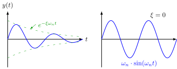
4.3 Unit step response of S.O.S.
\[\begin{array}{lll} \text{Overdamped } & \xi > 1 & \displaystyle\frac{a_1}{s+p_1} + \frac{a_2}{s+p_2} \\ & & \boxed{a_1 \cdot e^{p_1 t} + a_2 \cdot e^{p_2 t}} \\ \text{Critically damped } & \xi = 1 & \displaystyle\frac{\omega_n^2}{(s+\omega_n)^2} \\ & & \boxed{(a_1 + a_2 t) \cdot e^{-\omega_n t}} \\ \text{Underdamped } & \xi < 1 & \displaystyle\frac{c_1}{s + \sigma + j \omega} + \frac{c_2}{s + \sigma - j \omega} \\ & & \boxed{\frac{\omega_n}{\sqrt{1-\xi^2}} \cdot e^{-\xi \omega_n t} \cdot \sin(\sqrt{1-\xi^2} \cdot \omega_n t)} \end{array}\]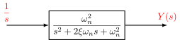
\[\begin{align*} Y(s) &= \frac{1}{s} \cdot \frac{\omega_n^2}{s^2 + 2 \xi \omega_n s + \omega_n^2} \\ &= \frac{c_1}{s} + \frac{c_2}{s + \sigma + j\omega} + \frac{c_3}{s + \sigma - j\omega} \end{align*}\]
Unit step response of S.O.S. (cont’d) - 05/22
\[\begin{align*} Y(s) &= \frac{1}{s} \cdot \frac{\omega_n^2}{s^2 + 2 \xi \omega_n s + \omega_n^2} \\ &= \frac{c_1}{s} + \frac{c_2}{s + \sigma + j\omega} + \frac{c_3}{s + \sigma - j\omega} \end{align*}\]
To find \(c_1,\,c_2,\,c_3\), we multiply both side by \(\color{YellowOrange}\boxed{\color{black} s \cdot \left(s^2 + 2\xi\omega_n s + \omega_n^2\right)}\,\):
\[\begin{align*} \omega_n^2 &= c_1 \cdot \left(s^2 + 2\xi\omega_n s + \omega_n^2\right) + c_2 \cdot s \cdot (s+\sigma+j\omega) + c_3 \cdot s \cdot (s+\sigma-j\omega) \\ \omega_n^2 &= \color{blue}\underset{0}{\underline{\color{black}(c_1+c_2+c_3) s^2}} \color{black} + \color{red}\underline{\color{black}c_1 \cdot 2 \sigma \cdot s + c_2 \cdot (\sigma - j\omega) s} \color{black} + \color{red}\underset{0}{\underline{\color{black}c_3 \cdot (\sigma + j\omega) s}} \color{black} + \color{green}\underset{\quad{}^\searrow 1}{\color{black} c_1} \color{black} \cdot \omega_n^2 \end{align*}\]
Note from last class: \[\begin{align*} \sigma &= \xi \omega_n \\ \omega &= \sqrt{1-\xi^2} \cdot \omega_n \end{align*}\]
\[\color{Peach} \begin{cases} c_1+c_2+c_3=0 \\ c_1 \cdot 2\sigma + c_2 \cdot (\sigma-j\omega) + c_3 \cdot (\sigma+j\omega) = 0\end{cases}\]
\[\begin{cases} c_2+c_3=-1 \\ \color{RedOrange}\underset{\color{red}\underline{\underline{\color{RedOrange}\displaystyle c_3-c_2 = -\frac{\sigma}{j\omega}}}}{\underset{\displaystyle \sigma + (c_3-c_2) \cdot j\omega}{\underbrace{\color{black}2\sigma + (c_2+c_3)\sigma}}} \color{black} + (c_3-c_2) \cdot j\omega = 0\end{cases}\]
\[\color{red} \begin{cases}\displaystyle c_2 = -\frac{1}{2} + \frac{\sigma}{2j\omega} \\ \displaystyle c_3 = -\frac{1}{2} - \frac{\sigma}{2j\omega}\\\end{cases}\]
So \(\displaystyle Y(s) = \frac{1}{s} + \frac{-\frac{1}{2} + \frac{\sigma}{2j\omega}}{s+\sigma+j\omega} + \frac{-\frac{1}{2} - \frac{\sigma}{2j\omega}}{s+\sigma-j\omega}\) .
\[\begin{align*} y(t) &= 1 + \left(-\frac{1}{2} + \frac{\sigma}{2j\omega}\right) \cdot e^{-(\sigma+j\omega)t} + \left(-\frac{1}{2} - \frac{\sigma}{2j\omega}\right) \cdot e^{-(\sigma-j\omega)t} \\ &= 1 - \frac{1}{2} \left[e^{-(\sigma+j\omega)t} + e^{-(\sigma-j\omega)t}\right] + \frac{\sigma}{2j\omega} \left[e^{-(\sigma+j\omega)t} - e^{-(\sigma-j\omega)t}\right] \\ &= 1 - e^{-\sigma t} \cdot \frac{e^{-j\omega t} + e^{j\omega t}}{2} + \frac{\sigma}{\omega} \cdot e^{-\sigma t} \cdot \frac{e^{-j\omega t} + e^{j\omega t}}{2j} \\ &= 1 - e^{-\sigma t} \cdot \left(\cos \omega t + \frac{\sigma}{\omega} \cdot \sin \omega t\right) . \end{align*}\]
Side note: \[ A \cdot \sin \omega t + B \cdot \cos \omega t = C \cdot \sin(\omega t + \varphi) \] \[ C = \sqrt{A^2+B^2} \] \[ \tan\varphi = \displaystyle\frac{B}{A} \implies \varphi = \arctan \frac{B}{A} \]
\[\begin{align*} y(t) &= 1 - e^{-\sigma t} \cdot \sqrt{1 + \frac{\sigma^2}{\omega^2}} \cdot \sin \left(\omega t + \color{red}\underset{\varphi}{\underbrace{\color{black}\arctan\frac{\omega}{\sigma}}} \right) \\ &= 1 - e^{-\xi \omega_n t} \sqrt{1 + \frac{\xi^2 \color{red}\cancel{\omega_n^2}}{(1-\xi^2)\color{red}\cancel{\omega_n^2}}} \cdot \sin\left(\color{red}\underset{\omega}{\underbrace{\color{black} \sqrt{1-\xi^2} \omega_n}} \color{black} t + \varphi\right) \\ &= 1 - \frac{1}{\sqrt{1-\xi^2}} \cdot e^{-\xi\omega_n t} \cdot \sin(\omega t + \varphi) . \end{align*}\]
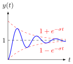
\(\boxed{\textbf{Performance Index}}\)
Rise Time (\(T_r\)) \[1 - \color{YellowOrange}\underset{0}{\underbrace{\color{black}\frac{1}{\sqrt{1-\xi^2}} \cdot e^{-\xi\omega_n \cdot T_r} \cdot \sin(\omega T_r + \varphi)}} \color{black} = 1\]
\[\begin{align*} \color{YellowOrange} \sin(\omega T_r + \varphi) \, &\color{YellowOrange}= 0 \\ \color{YellowOrange} \omega T_r + \varphi \, &\color{YellowOrange}= k \cdot \pi \\ \color{YellowOrange} T_r \, &\color{YellowOrange}= \frac{\pi-\varphi}{\omega} = \frac{\pi-\varphi}{\sqrt{1-\xi^2} \cdot \omega_n} \end{align*}\]
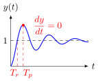
Peak Time (\(T_p\)) \[\frac{dy}{dt} = \frac{\omega_n}{\sqrt{1-\xi^2}} \cdot e^{-\xi\omega_n T_p} \cdot \sin \omega T_p = 0\]
\[\begin{align*} \color{YellowOrange} \sin \omega T_p \, &\color{YellowOrange}= 0 \\ \color{YellowOrange} \omega T_p \, &\color{YellowOrange}= k \cdot \pi \\ \color{YellowOrange} T_p \, &\color{YellowOrange}= \frac{\pi}{\omega} = \frac{\pi}{\sqrt{1-\xi^2} \cdot \omega_n} \end{align*}\]
Percent Overshoot (P.O.) \[\begin{align*} y(T_p) &= 1 - \frac{1}{\sqrt{1-\xi^2}} \cdot e^{-\frac{\xi\pi}{\sqrt{1-\xi^2}}} \cdot \sin(\pi+\varphi) \\ &= 1 + \frac{\sin\varphi}{\sqrt{1-\xi^2}} \cdot e^{-\frac{\xi\pi}{\sqrt{1-\xi^2}}} \end{align*}\]
\[\color{red} \tan\varphi = \frac{\sqrt{1-\xi^2} \,\omega_n}{\xi \omega_n} \implies \sin\varphi = \sqrt{1-\xi^2}\]
So, \(\quad y(T_p) = 1 + \color{red}\underline{\underline{\color{black} e^{-\frac{\xi\pi}{\sqrt{1-\xi^2}}}}}\).
\[\color{blue} \mathrm{P.O.} = e^{-\frac{\xi\pi}{\sqrt{1-\xi^2}}} \]
Settling time (\(T_s\)) \[1-e^{-\sigma T_s} \approx 90\%\] \[T_s = \frac{4}{\sigma} = \frac{4}{\xi \omega_n}\]
Side Topic: Euler’s Formula
\[\begin{align*} e^{i\theta} &= \cos\theta + i \cdot \sin\theta \\ e^{-i\theta} &= \cos\theta - i \cdot \sin\theta \end{align*}\]
\[\underline{i \sim \text{Imaginary number}}.\]
\[\color{YellowOrange}i=\sqrt{-1}\qquad\qquad\qquad\qquad\qquad\qquad\qquad\qquad\qquad\qquad\]
\[\mathbb{N} \sim \text{Natural number}.\]
\[0,1,2,3,\dots \quad \color{red}{+}\qquad\qquad\qquad\qquad\qquad\qquad\qquad\qquad\qquad\qquad\]
\[\mathbb{Z} \sim \text{Interger}.\]
\[\dots,-3,-2,-1,0,1,2,3,\dots \quad \color{red}{+,-,\times}\qquad\qquad\qquad\qquad\qquad\qquad\qquad\qquad\qquad\qquad\]
\[\mathbb{Q} \sim \text{Rational number}.\]
\[\frac{2}{3},\, \frac{3}{2} \quad \color{red}{+,-,\times,\div}\qquad\qquad\qquad\qquad\qquad\qquad\qquad\qquad\qquad\qquad\]
\[\mathbb{R} \sim \text{Real number}\]
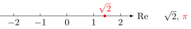
\[\mathbb{C} \sim \text{Complex number}\]
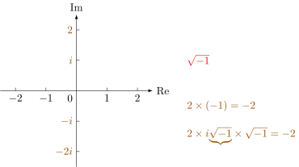
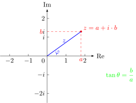
\[\begin{align*} z &= a + i\cdot b \\ &= \left\lvert z \right\rvert \angle \theta = \sqrt{a^2+b^2} \angle \arctan\frac{b}{a} \\ &= \underset{\color{red} a = \left\lvert z \right\rvert \cdot \cos\theta, \quad b = \left\lvert z \right\rvert \cdot \sin\theta}{\color{blue}\underline{\color{black} \left\lvert z \right\rvert \cdot e^{i\theta} = \color{Peach} \left\lvert z \right\rvert \cdot \cos\theta + i \cdot \left\lvert z \right\rvert \cdot \sin\theta}} \end{align*}\]
\[ \color{blue} e^{i\theta} = \cos\theta + i \cdot \sin\theta \]
Euler’s number \(e\)
\[e = \lim_{n\to\infty} \left(1+\frac{1}{n}\right)^n\]
Compound interest: (Jacob Bernoulli)
\[\begin{array}{llll} n=1: & 1 & 2 \\ n=2: & 1 & 1.5 & 1.5^2=2.25 \\ n=3: & 1 & 1.33 & 1.33^3=2.35 \\ n=4: & 1 & 1.25 & 1.25^4=2.44 \\ & & & \vdots \\ & & & e = 2.718281828459045\cdots \end{array}\]\[e^x = \lim_{n\to\infty} \left(1+\frac{x}{n}\right)^n\]
\[ e^1=1 \to \left(1+\frac{1}{n}\right) \to \left(1+\frac{1}{n}\right)^2 \to \left(1+\frac{1}{n}\right)^2 \to \dots \to \left(1+\frac{1}{n}\right)^n \]
\[ e^{i\cdot1}=1 \to \left(1+\frac{i}{n}\right) \to \left(1+\frac{i}{n}\right)^2 \to \left(1+\frac{i}{n}\right)^2 \to \dots \to \left(1+\frac{i}{n}\right)^n \]
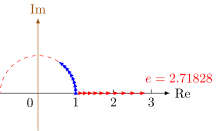
The distance for each step is \(\displaystyle\frac{1}{n}\); after \(n\) steps, we will travel distance of 1.
\[\color{red} e^{i\cdot 2\pi} = 1\]
\[\color{red}\boxed{e^{i\pi} = -1} \sim \text{Euler's identity}\]